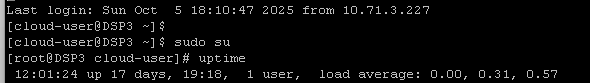
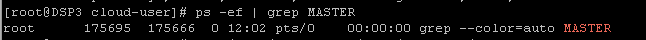
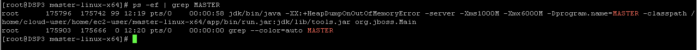

1.Masuk ke Server DSP
Langkah pertama adalah melakukan akses login melalui PAM (CyberArk) ke dalam server DSP yang dilaporkan sedang mengalami down.
Note: Pastikan Anda menggunakan akun credentials CyberArk/PAM yang valid untuk mengakses IP Server DSP terkait.
2.Login Root & Cek Uptime
Setelah berhasil masuk ke server, naikkan hak akses (privilege) Anda menjadi user root dan lakukan pengecekan uptime server menggunakan perintah berikut:
sudo su uptime

3.Cek Status Master
Lakukan pengecekan terhadap proses MASTER untuk memastikan apakah service tersebut benar-benar dalam keadaan down atau mati.
ps -ef | grep MASTER

Indikator: Jika hasil atau tampilan dari command di atas hanya menampilkan grep --color=auto MASTER (tanpa ada service java yang berjalan), itu tandanya service MASTER memang sedang DOWN.
4.Masuk ke Direktori Master Linux
Sebelum menghidupkan kembali service, Anda harus masuk ke dalam folder/direktori tempat file eksekusi master linux disimpan.
cd /home/cloud-user/home/ec2-user/master-linux-x64 cd master-linux-x64/
5.Menyalakan (Start) Service
Setelah Anda berada di dalam direktori master-linux-x64/, jalankan file start.sh untuk menghidupkan kembali service MASTER.
sh start.sh

6.Verifikasi Service
Terakhir, pastikan service berhasil dijalankan dengan mengulangi perintah pengecekan MASTER sebelumnya.
ps -ef | grep MASTER
Indikator: Jika tampil baris panjang yang memuat parameter seperti jdk/bin/java -XX:+HeapDumpOnOutOfMemoryError ... -Dprogram.name=MASTER, itu menandakan service DSP sudah menyala dan berjalan normal.